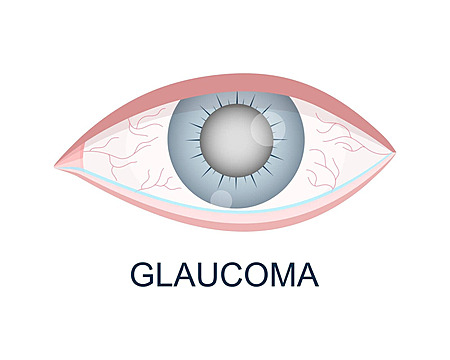

Projects
A selection of Data Science projects showcasing my skills in machine learning, data analysis, and real-world problem solving.

Spotify-Data-Analysis-Interactive-Power-BI-Dashboard
An interactive Power BI dashboard that analyzes Spotify data to explore trends in tracks, artists, and streaming performance, turning raw data into actionable insights.
Netflix-Movies-TV-Shows-Analysis
Analyzed Netflix movie and TV show data to identify trends, user preferences, and content performance metrics using Python and statistical methods.

Glaucoma-medical-data-analysis
Analyzed glaucoma medical data to identify patterns and insights using Python and statistical methods.
❤️ Heart Disease Analysis
An interactive Tableau project analyzing heart disease data to identify key risk factors and patterns, transforming medical data into clear visual insights for better understanding and decision-making.

📊 Complete Data Analytics Project: End-to-End Industry-Standard Analysis of Customer Shopping Trends
This project is a complete, industry-standard data analytics portfolio project that demonstrates an end-to-end analysis of customer shopping trends using real-world retail data.